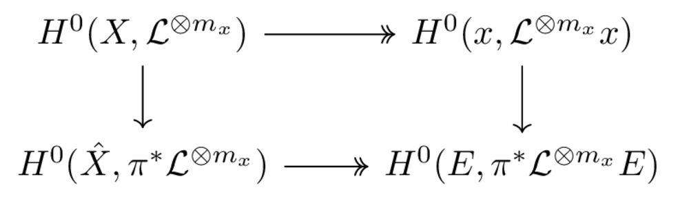

Divisors, Picard group and Kodaira embedding theorem
Table of Contents
The PDF version of this page can be downloaded by replacing html in the its address by
pdf.
For example /html/sheaf-cohomology.html should become /pdf/sheaf-cohomology.pdf.
1 Divisors and Picard group
1.1 Holomorphic line bundles and first Chern class
A complex line bundle is a 2 dimensional vector bundle with a complex structure on each fiber, i.e. each change of coordinates \( g_{ij}: U_j\cap U_i \times \mathbb{R}^2 \longrightarrow U_i\cap U_j\times\mathbb{R}^2 \) is \( i \)-linear, i.e. \( g_{ij} \) can be represented by a function \( U_{i}\cap U_j \longrightarrow \mathbb{C} \).
A holomorphic line bundle is a complex line bundle that is also a complex manifold with the projection being holomorphic. In the same notation, the \( g_{ij} \) are now holomorphic functions.
A hermitian metric on a line bundle \( L \) is a positive sesquilinear form on each fiber. To define the Chern form of \( L \), let \( U \) be an open set of \( X \) over which \( L \) is trivialized and \( s_x \) is a holomorphic section of \( L \) over \( U \) that is non-vanishing, then one defines \[ \omega_{L,h} = \frac{1}{2\pi i}\partial \bar \partial \log |s|_h^2 \] which is independant of \( s \) since the ratio of two different \( s \) is in \( \mathcal{O}^*(U) \).
A Chern form is a real (1,1) form.
The set of isomorphic class of holomorphic line bundle is in one-to-one correspondance to \( H^1(X,\mathcal{O}_X^*) \)
The proof of this fact is straightforward, but it is worth to remark that this result convinces us that the natural mapping \( \check{H}^1(\mathcal{U},X) \longrightarrow \check{H}^1(\mathcal{V},X) \) where \( \mathcal{U} \) is a finer open covering than \( \mathcal{V} \) is injective, since a line bundle is completely defined by one set of change of coordinates \( (g_{ij}) \).
Now the Chern class of a holomorphic line bundle is the class of \( \omega_{L,h} \) in \( H^2(X,\mathbb{Z}) \), which turns out to be independent of \( h \) and is in fact lies in the image of \( H^2(X,\mathbb{Z}) \longrightarrow H^2(X,\mathbb{R}) = H^2(X, \mathbb{Z})\otimes_{\mathbb{Z}}\mathbb{R} \). In fact, the class of \( \omega_{L,h} \) can be defined using the following exact sequence: \[ 0 \longrightarrow \mathbb{Z} \longrightarrow \mathcal{O}_X \longrightarrow \mathcal{O}_X^* \longrightarrow 0 \] where the injective arrow is the multiplication by \( i2\pi\) and the surjective one is exponential. The Chern map is in fact \( H^1(X,\mathcal{O}^*_X) \longrightarrow H^2(X,\mathbb{Z}) \). To prove this, one uses a double complex whose horizontal is the de Rham resolution and vertical is the Čech resolution and diagram chasing.
1.2 Divisors, line bundles and sheaves
- A holomorphic line bundle is the same as a locally free \( \mathcal{O}_X \)-module of rank 1.
- An isomorphic class of line bundles is the same as a locally free isomorphic sheaf of \( \mathcal{O}_X \)-module of rank 1.
1.2.1 From divisors to Picard group
A divisor is a formal sum of irreducible hypersurface, which can also be intepreted as an element of \( \check{H}^0(X,K_X^*/\mathcal{O}_X^*) \), which gives a mapping \( Div(X) \longrightarrow \check{H}^0(X,K_X^*/\mathcal{O}_X^*) \) with principal divisors being exactly sent to elements of \( K_X^*/\mathcal{O}_X^* \) coming from \( K_X^* \). multiplicative).
Since the following sequence \[ 0 \longrightarrow \mathcal{O}_X^* \longrightarrow K_X^* \longrightarrow K_X^*/O_X^* \longrightarrow 0 \] is exact, one has an application \(\mathcal{O}:\ Div(X) = H^0(X, K_X^*/\mathcal{O}_X^*) \longrightarrow H^1(X, \mathcal{O}_X^*) = Pic(X) \). The kernel of \( \mathcal{O} \) corresponds to the the space of principal divisors. It is however worth having details of the application \(\mathcal{O} \).
Let \( D = (U_i,f_i)\in Div(X) \) where \( f_i \) are meromorphic function on \( U_i \) with \( f_i/f_j\in \mathcal{O}_X^* \), then \( \mathcal{O}(D) \) is defined as following: \[ \mathcal{O}(D) (U_i) = f_i^{-1}\mathcal{O}_X(U_i) \]. Note that if \( D \) is effective, i.e. \( f_i\in \mathcal{O}_X(U_i) \) then \( \mathcal{O(D)} \) is the sheaf of holomorphic functions vanishing on \( D \).
To resume, here are some basic consequence of the above discussion: If \( D \) is effective then
- If \( D \) is effective then \( H^0(X, \mathcal{O}(D) \ne 0 \).
- If \( D \) is effective then \( \mathcal{O}(-D) \) is the sheaf of holomorphic function vanishing on \( D \). Therefore \( \mathcal{O}(-D) \) can be viewed as a ideal subsheaf of \( K_X \) and one has the following exact sequence: \[ 0 \longrightarrow \mathcal{O}(-D) \longrightarrow \mathcal{O}_X \longrightarrow \mathcal{O_D} \longrightarrow 0 \] where \( \mathcal{O}_D \) is the sheaf of "regular functions" on \( D \).
- If \( L \) is a holomorphic line bundle and \( 0\ne s\in H^0(X,L) \) then \( \mathcal{O}(Z(s)) \equiv L \)
- If \( D \) is effective then \( \mathcal{O}(D) \) has a non-zero global section, for example section \( 1 = (U_i, f_i) \)
1.2.2 The corresponding line bundle of \( \mathcal{O}(Y) \)
Let \( Y \) be a hypersurface of \( X \), then the line bundle \( \mathcal{O}(Y) \) is isomorphic to \( \mathcal{N}_{Y,X} \) the normal line bundle of \( Y \) in \( X \).
By consequence, \( K_Y = \restr{(K_X\otimes \mathcal{O}(Y))}{Y} \).
2 Example: Projective space
2.1 \( \mathcal{O}(d) \) and its sections
Let's have some examples for the point of view discussed above, starting with the torsion sheaves \( \mathcal{O}(d) \).
The sheaf \( \mathcal{O}(-1) \), called tautological sheaf, is an invertible sheaf on \( \mathbb{P}^n_{\mathbb{C}} \) such that the fiber over \( l\in \mathbb{P}^n_{\mathbb{C}} \) of the corresponding line bundle is \( l \) itself. Let \( l=[x_0:\dots:x_n] \ in U_i \) then a point in \( l \) is of form \( t_i[\frac{x_0}{x_i}:,\dots:\frac{x_n}{x_i}] \) with coordinates in \( U_i \) being \( t_i \). So the change of coordinates from chart \( U_i \) to \( U_j \) is, since \( \frac{t_j}{x_j} = \frac{t_i}{x_i} \): \[ g_{ji} = \frac{x_i}{x_j} \] One notes by \( \mathcal{O}(1) \) the dual of \( \mathcal{O}(-1) \) and \( \mathcal{O}(d) = \mathcal{O}(1)^{\otimes d} \) and \( \mathcal{O}(-d)=\mathcal{O}(-1)^{\otimes d} \)
Now if an invertible sheaf \( \mathcal{L} \) with \( \mathcal{L}(U_i) = \frac{1}{f_i}\mathcal{O}_X(U_i) \), the change of coordinates of the corresponding line bundle from chart \( U_i \) to \( U_j \) is \( g_{ji} = \frac{f_j}{f_i} \). So for \( \mathcal{O}(1) \), one has \( \frac{f_j}{f_i} = \frac{x_j}{x_i} \), i.e. there exists a linear combination \( A \) of \( x_0,\dots, x_n \) such that \( f_i = \frac{A}{x_i} \) is a holomorphic function correponding to the 1-section viewed in chart \( U_i \). As presented in the previous section, \( \mathcal{O}(1) \) is the associated line bundle of a hyperplane defined by the equation \( A = 0 \).
Similarly, \( \mathcal{O}(d) \) is the associated line bundle of a hypersurface \( A_d \) defined by a homogenous equation of degree \( d \), and \( \mathcal{O}(d) \) is the line bundle associated to the sheaf of holomorphic functions vanishing on \( A_d \).
2.2 Line bundles and maps to projective space, Veronese embedding
A linearly independent family \( s_0,\dots, s_N \) of global sections of a holomorphic line bundle \( L \) defines a holomorphic map \(X\setminus Bs((s_i)) \longrightarrow \mathbb{P}^N_{\mathbb{C}} \) where \( Bs((s_i)) \) is the set of basepoints of \((s_i)\) where all the sections \( s_i \) vanish.
The global sections of \( \mathcal{O}(d) \) over \( \mathbb{P}^n_{\mathbb{C}} \) are \( H^0(\mathbb{P}^n_{\mathbb{C}}, \mathcal{O}(d) = \mathbb{C}[z_0,\dots,z_n]_d \) the vector space of homogenous polynomial of degree \( d \). The corresponding projective map is in fact a embedding, called Veronese embedding.
2.3 Canonical bundle and Euler sequence
\[ K_{\mathbb{P}^n_{\mathbb{C}} = \mathcal{O}(-n-1)} \]
\[ 0 \longrightarrow \mathcal{O} \longrightarrow \mathcal{O}(1)^{\oplus n} \longrightarrow \mathcal{T}_{\mathbb{P}_{\mathbb{C}}^n} \longrightarrow 0 \]
3 Blowing-up
3.1 Blowing-up
Let \( X \) be a complex manifold, \( x\in X \) and \( \pi:\ \hat X \longrightarrow X \) is the blow-up of \( X \) at \( x \) and \( E \) be the corresponding exceptional divisor, then \[ K_{\hat X} = \pi^* K_X \otimes \mathcal{O}((n-1)E). \] As a consequence, \( \restr{\mathcal{O}(E)}{E} = \mathcal{O}(-1) \) where \( \mathcal{O}(-1) \) is the tautologic sheaf over \( E = \mathbb{P}^{n-1}_{\mathbb{C}} \).
The appearance of the number \( n-1 \) is natural and can be explained as follow. First note that
- in \( \hat X\setminus E \), there is no difference between \( K_{\hat X} \) and \( K_X \).
- \( \pi_* \) send every tangent vector of \( E \) to the tangent vector \( 0 \) at \( x\in X \),
- the pull-back \( \pi^* \omega \) of an \( n \)-form on \(X \) always vanishes on \( E \) therefore cannot generate \( K_{\hat X} \).
Our correction of this should be dividing \( \pi^* \omega \) by \( f^k \) where \( f \) is the equation defining \( E \) in \( \hat X \), i.e. tensoring \( \pi^* K_X \) by an appropriate multiple of \( \mathcal{O}(E) \) depending on the order of vanishing of \( \pi^* \omega \) at \( E \), which we claim to be \( n-1 \).
Here is the argument I used to convince myself: this vanishing order is that of the ratio of \( \pi^* \omega \) and a non-zero \(n \)-form (says the standard in the base formed by \( n-1 \) tangent vectors \( e^E_i \) of \( E \) and the normal vector \( v \) of \( E \) in \( X \)), i.e. the vanishing order of \( \pi^*\omega(e^E_i, v) \). Each \( e^E_i\) plugged into \( \pi^*\omega \) adds one order of vanishing resulting in \( n-1 \).
Here is the argument I would use to convince others: WLOG, suppose that \( X = \mathbb{C}^n \) and \( x=0 \), then \( \hat X \) can be seen as a subset of \( \mathbb{C}^n\times \mathbb{P}^{n-1} \) with the coordinates in each chart \( U_i = \left\{(x_1, \dots, x_n,[p_1:\dots:p_n]):\ p_i\ne 0\right\}\) being \( (\frac{p_1}{p_i},\dots,\frac{p_n}{p_i},\zeta_i) \) with \( z_k = \frac{p_k}{p_i}\zeta_i \). The map \( \pi \) is given in local coordinates as \[ (\frac{p_1}{p_i},\dots,\frac{p_n}{p_i},\zeta_i) \mapsto (\frac{p_1}{p_i}\zeta_i, \dots \zeta_i, \dots \frac{p_n}{p_i}\zeta_i) \] The pull-back of \( \omega \) is \[ d(\frac{p_1}{p_i}\zeta_i)\wedge\dots\wedge d\zeta_i \wedge \dots\wedge d(\frac{p_n}{p_i}\zeta_i) = \zeta_i^{n-1}d(\frac{p_1}{p_i})\wedge\dots\wedge d\zeta_i\wedge\dots\wedge d(\frac{p_n}{p_i}) \] which vanishes with order \( n-1 \).
For the consequence, note that \( \mathcal{K}_E = \mathcal{O}(-n) = \restr{(K_{\hat X}\otimes \mathcal{O}(E))}{E} = \restr{(\pi^* K_{X}\otimes \mathcal{O}(nE))}{E} \), but \( \pi^* K_X \) is trivial over \( E \), therefore \( \restr{\mathcal{O}(E)}{E} = \mathcal{O}(-1) \).
4 Kodaira vanishing theorem
Let \( X \) be a compact complex manifold of dimension \( n \) and \( L \) is a positive holomorphic line bundle on \( X \), i.e. there exists a hermitian metric \( h \) on \( L \) such that the Chern form \( \omega_{L,h} \) is positive (i.e. a Kahler form). Then \[ H^q(X,\Omega_X^p \otimes \mathcal{L}) = 0 \quad\forall p+q >n. \] In particular, \[ H^i(X, K_X\otimes \mathcal{L}) = 0 \quad \forall i>0. \]
Since \( \mathcal{H}^{0,q}(E) \simeq H^q(X,\mathcal{E}) \) for all hermitian holomorphic vector bundle \( E \) with \( \mathcal{E} \) the corresponding sheaf of holomorphic sections. One needs to prove that all harmonic form in \( \mathcal{A}_X^{p,q}(L) \) vanishes for \( p+q>n \). This comes from the following two identities: Let \( \nabla \) be the Chern connection on \( L \) and \( \nabla = \nabla' + \nabla'' \) be its decomposition to \( (1,0) \) and \( (0,1) \) operators and \( \Delta_L' \) be the Laplacian corresponding to \( \nabla' \) then
- \( \Delta_L = \Delta'_L + 2\pi[L,\Lambda] \) where \( L \) and \( \Lambda \) are Lefshetz operators.
- \([L,\Lambda] = (k-n)Id_{\mathcal{A}^k_X}\)
Therefore \( 0\leq(\alpha,\Delta'a)_{L^2} = 2\pi (n-k)(\alpha,\alpha)_{L^2}\leq 0 \)
5 The traditional proof of Kodaira embedding theorem
Let \( X \) be a compact complex manifold with \( L \) a positive holomorphic line bundle on \( X \). Then \( L \) is generated by finitely many of its global sections and \( X \) can be embedded in a projective space \( \mathbb{C}\mathbb{P}^N \) with \( N \) sufficiently large.
The following approache is straight-forward: one shows that at every \( x\in X \), there is a global (holomorphic) section \( s_x \) of \( L^{\otimes m_x} \) such that \( s_x(x)\ne 0 \) then by compactness one can choose finitely many such sections and \( m_x \) which can be guaranteed to generate every germs at \( x \) of \( L^{\otimes m} \) with \( m=\max m_x \). That is one needs to prove that \[ H^0(X,\mathcal{L}^{\otimes m_x}) \twoheadrightarrow H^0({x}, \restr{\mathcal{L}^{\otimes m_x}}{x}) \] is surjective. Let \( \pi: \hat X \longrightarrow X \) be the blow-up of \( X \) at \( x \) and \( E = \pi^{-1}(x) \) be the corresponding exceptional divisor then one has

Figure 1: Insert caption [fig:kodaira-blowup]
where the vertical arrows are isomorphic (easy to see, maybe the right one needs Hartog). So one only needs to see that \(H^0(\hat X,\pi^*\mathcal{L}^{\otimes m_x}) \twoheadrightarrow H^0(E,\restr{\pi^*\mathcal{L}^{\otimes m_x}}{E})\). Since \( E \) is a divisor of \( \hat X \), one has $ 0 \longrightarrow \mathcal{O}(E) \longrightarrow \mathcal{O}_{\hat X} \longrightarrow \mathcal{O}_E \longrightarrow 0 $ hence \[ 0 \longrightarrow \mathcal{O}(E)\otimes\pi^* \mathcal{L}^{\otimes m_x} \longrightarrow \pi^* \mathcal{L}^{\otimes m_x} \longrightarrow \restr{\pi^*\mathcal{L}^{\otimes m_x}}{E} \longrightarrow 0. \]
It remains to prove that \( H^1(\hat X, \mathcal{O}(E)\otimes\pi^* \mathcal{L}^{\otimes m_x}) \), or by thm:Kodaira-vanishing, that \( \mathcal{O}(E)\otimes\pi^* \mathcal{L}^{\otimes m_x}\otimes K_{\hat X}^{-1} = \mathcal{O}(-nE)\otimes\pi^* (\mathcal{L}^{\otimes m_x}\otimes K_X^{-1}) \) is positive, where we used the fact that \( K_{\hat X} = \pi^* K_X\otimes \mathcal{O}_{\hat X}((n-1)E) \).
Note that on \( \hat X \setminus E \), one can choose \( m_x \) large enough such that \( \mathcal{L}^{\otimes m_x}\otimes K_X^{-1}\times \mathcal{O}(-nE) \) is positive. It remains to observe \( E\subset \hat X \) which is in fact \( \mathbb{CP}^{n-1} \). But \( \restr{\mathcal{O}(-E)}{E} \equiv \mathcal{O}(1) \) is positive, which concludes the proof.